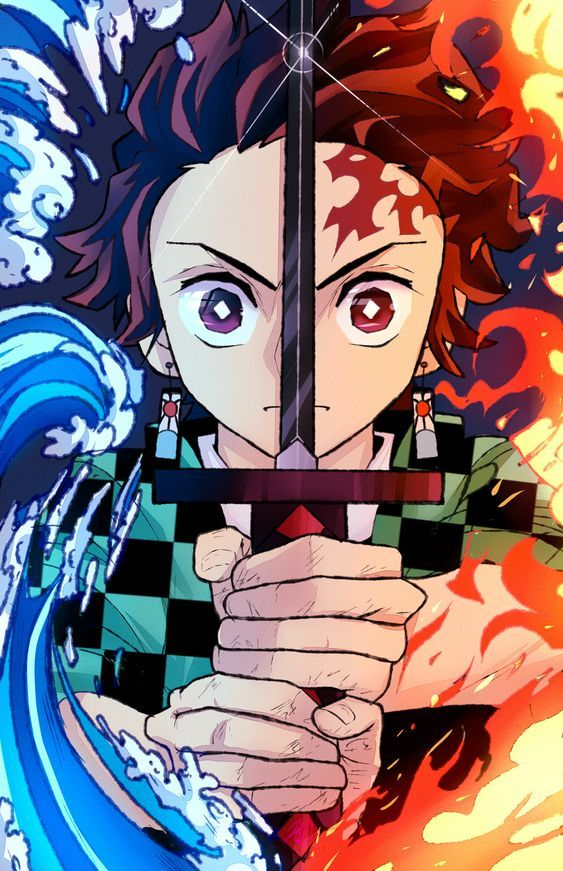
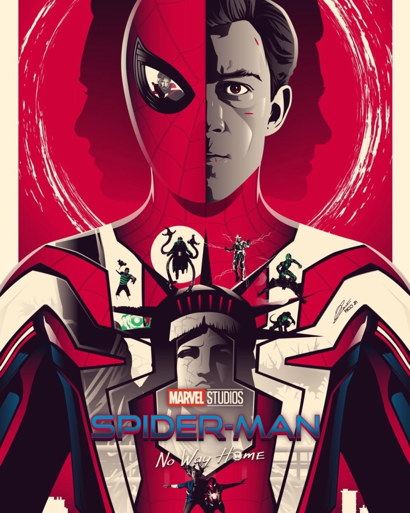
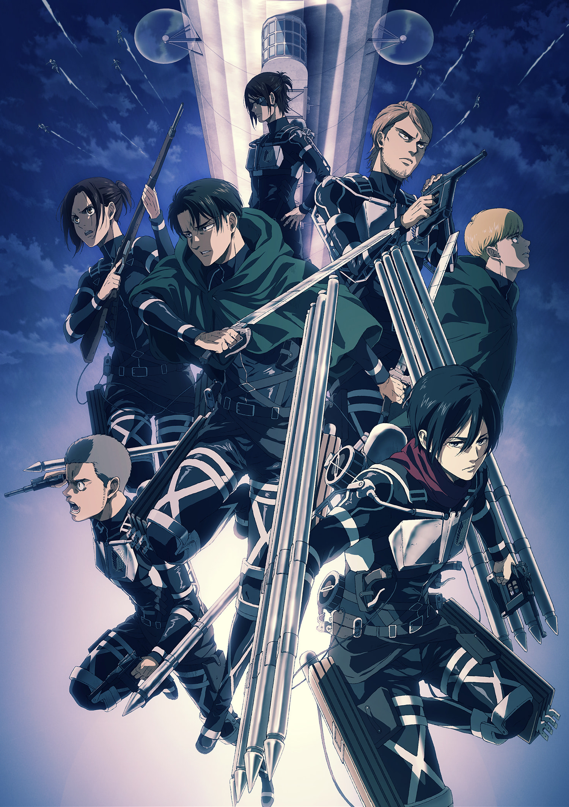

Demon Slayer: Kimetsu no Yaiba
Es una serie de manga escrita e ilustrada por Koyoharu Gotoge, cuya publicación comenzó el
15 de febrero de 2016 en la revista semanal Shukan Shonen Jump de la editorial Shueisha.

Tanjiro es un amable chico que se dedica a vender carbón para subsistir. Un día, al volver a casa,
encuentra a su familia muerta a manos de un demonio.
Spider-Man: No Way Home
Tras descubrirse la identidad secreta de Peter Parker como Spider-Man, la vida del joven se vuelve una locura.
Peter decide pedirle ayuda al Doctor Extraño para recuperar su vida. Pero algo sale mal y provoca una fractura
en el multiverso.

Ned descubre que puede crear portales usando el anillo de honda de Strange, que él y MJ usan para tratar de localizar
a Parker. En cambio, encuentran versiones alternativas de Parker de otros universos
Shingeki No Kyojin
Shingeki no Kyojin, también conocida en países de habla hispana como Ataque a los titanes y Ataque de los titanes, es una
serie de manga japonesa escrita e ilustrada por Hajime Isayama.

La historia se desarrolla en un mundo ficticio en el que la humanidad está al borde de la extinción a causa de unas
criaturas humanoides llamadas "titanes", lo que obliga a los sobrevivientes a refugiarse en tres enormes murallas
que impiden el acceso a dichos monstruos.